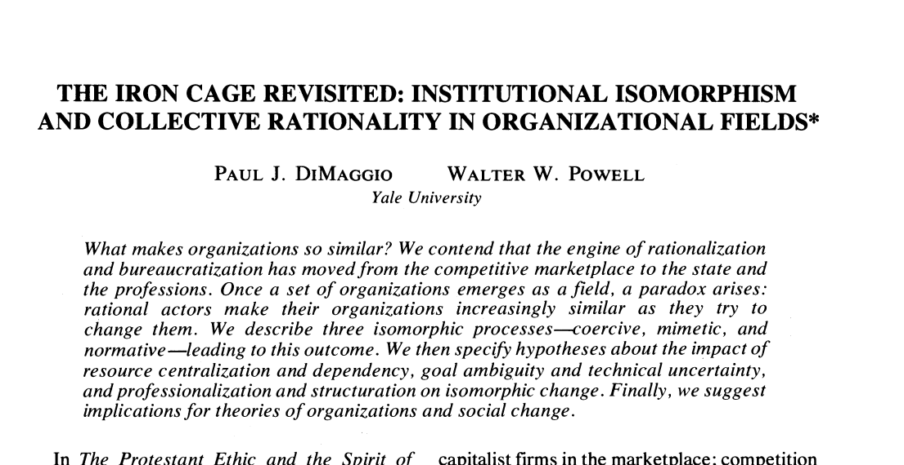

ทำไมองค์กรจึงค่อย ๆ เหมือนกัน แม้ทุกแห่งกำลังพยายามเปลี่ยนแปลง
{kind=link}

ทำไมมหาวิทยาลัย หน่วยงาน และองค์กรในวงการเดียวกันจึงค่อย ๆ ทำสิ่งคล้ายกัน ที่หนึ่งตั้งศูนย์ AI อีกที่ก็ตั้งตาม ที่หนึ่งเปิดหลักสูตรหรือคณะใหม่ องค์กรอื่นก็เริ่มถามว่าตนเองควรมีบ้างหรือยัง
ความคล้ายกันไม่ได้แปลว่าสิ่งเหล่านั้นไม่ดี แต่ชวนให้ถามว่าองค์กรเลือกเพราะมันเหมาะกับปัญหาและบริบทของตัวเองจริง ๆ หรือเพราะการเห็นคนอื่นทำทำให้รู้สึกว่า “เราก็ควรมี”
เมื่อคำถามเปลี่ยนจาก “มันแก้ปัญหาอะไร” เป็น “ที่อื่นเขามีกันหรือยัง”
บทความคลาสสิก The Iron Cage Revisited ของ Paul J. DiMaggio และ Walter W. Powell อธิบายว่า เมื่อองค์กรจำนวนหนึ่งก่อตัวเป็นสนามเดียวกัน แรงผลักในสนามนั้นทำให้องค์กรมีโครงสร้างและแนวปฏิบัติคล้ายกันมากขึ้น แม้ความคล้ายดังกล่าวไม่ได้พิสูจน์เสมอไปว่ามีประสิทธิภาพสูงสุด
นี่คือภาวะย้อนแย้งสำคัญ: ผู้ตัดสินใจแต่ละคนอาจกำลังพยายามเปลี่ยนองค์กรอย่างมีเหตุผล แต่ผลรวมของการตัดสินใจกลับทำให้ทุกองค์กรเหมือนกันมากขึ้นเรื่อย ๆ
สามแรงที่ทำให้องค์กรเดินไปในทิศทางเดียวกัน
แรงบังคับ (coercive isomorphism) เกิดจากกฎ นโยบาย งบประมาณ แหล่งทรัพยากร หรือผู้มีอำนาจที่ทำให้องค์กรต้องปรับโครงสร้างและพฤติกรรมไปในแนวทางหนึ่ง
การเลียนแบบ (mimetic isomorphism) เกิดชัดในช่วงที่เป้าหมายคลุมเครือหรือเทคโนโลยีไม่แน่นอน เมื่อไม่รู้ว่าควรทำอย่างไร องค์กรจึงมองหาแบบอย่างที่ดูประสบความสำเร็จแล้วทำตาม
แรงจากบรรทัดฐานทางวิชาชีพ (normative isomorphism) เกิดจากคนในวิชาชีพเดียวกันที่ได้รับการศึกษา อ่านความรู้ เข้าร่วมสมาคม และประชุมในพื้นที่คล้ายกัน จนเกิดภาษา มาตรฐาน และกรอบคิดร่วมกัน
FOMO ขององค์กรและความปลอดภัยของผู้ตัดสินใจ
ปรากฏการณ์นี้คล้าย FOMO ของคน องค์กรไม่อยากตกขบวน และผู้บริหารที่อยู่ช่วงปลายของชีวิตการทำงานย่อมมีแรงจูงใจให้เลือก safe zone การทำเหมือนคนอื่นแล้วพลาดยังอธิบายได้ว่า “ทุกที่ก็ทำกัน” แต่การเลือกทางต่างแล้วพลาดทำให้ผู้ตัดสินใจต้องรับเต็ม ๆ
ดังนั้น สิ่งที่องค์กรเลือกจึงอาจไม่ใช่สิ่งที่ดีที่สุด แต่อาจเป็นสิ่งที่ปลอดภัยที่สุดในการตัดสินใจ ชื่อโครงการ คำศัพท์ ผู้บริหาร และยุคสมัยเปลี่ยนได้ตลอดเวลา แต่ธรรมชาติของคนและองค์กรอาจเปลี่ยนช้ากว่ามาก
ก่อนทำตาม ควรย้อนกลับมาถามอะไร
แนวคิด institutional isomorphism ไม่ได้บอกว่าการทำเหมือนองค์กรอื่นผิดเสมอไป แบบอย่างที่ดีช่วยลดต้นทุนการทดลองได้ แต่การตัดสินใจควรเริ่มจากปัญหา หลักฐาน ความพร้อม และผลลัพธ์ที่ต้องการ ไม่ใช่เริ่มจากความกลัวว่าตนเองจะไม่มีสิ่งที่คนอื่นมี
คำถามที่ควรถามจึงได้แก่ สิ่งนี้แก้ปัญหาอะไร เหตุใดจึงเหมาะกับเรา จะวัดผลอย่างไร มีทางเลือกอื่นหรือไม่ และหากไม่ทำตามกระแสจะเกิดความเสียหายจริงเพียงใด คำถามเหล่านี้ช่วยแยกการเรียนรู้จากผู้อื่นออกจากการเลียนแบบเพื่อความชอบธรรม
งานวิชาการต้นทาง The Iron Cage Revisited Paul J. DiMaggio และ Walter W. Powell, American Sociological Review, Vol. 48, No. 2 (1983), pp. 147–160